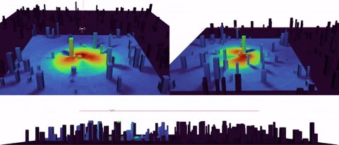
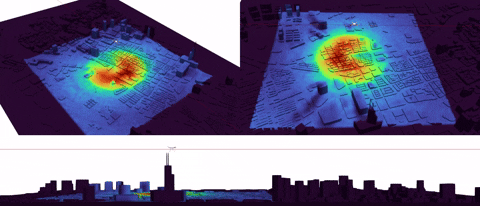

Tracking Environmental Noise for Low-altitude Aircraft with Multimodal Acoustic Field Synthesis
Abstract
The low-altitude aircraft operating within 1,000 meters of airspace have revolutionized urban industries through applications. However, deploying low-altitude aircraft in cities faces significant noise pollution challenges that urgently require effective management strategies. Aircraft acoustic tracking effectively visualizes the noise impact of flying aircraft, enabling the public to understand it and support sustainable airspace management intuitively. Traditional acoustic measurements using microphone arrays are often costly and inflexible, while numerical simulations offer flexibility but lack the efficiency needed for large-scale applications. Recent advances in neural networks show promise, but they still struggle to capture detailed acoustic features in complex aircraft sound source models and urban environments. In this paper, we introduce a novel data-driven framework, termed Multimodal Acoustic Field Synthesis (MAFS), to address these challenges. By integrating terrain layouts, aircraft noise data, and flight parameters as multimodal conditions, our MAFS framework synthesizes detailed acoustic field intensity through diffusion probabilistic models and finally generates dynamic noise intensity maps along flight paths. We evaluate our proposed MAFS framework on both simulation and realistic city cases, demonstrating both its accuracy and efficiency. Overall, it offers a practical, efficient, and economic solution for environmental noise tracking in low-altitude aircraft applications.

Simulation in a conceptual city (50 buildings).

Simulation in a real-world city (Shanghai).